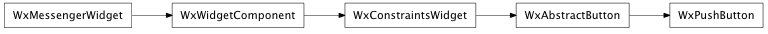

Bases: enaml.widgets.abstract_button.AbstractButton
A button control represented by a standard push button widget.
The interface for AbstractButton fully defines the interface for a PushButton.
alias of __NoInterface__

Bases: enaml.qt.qt_abstract_button.QtAbstractButton
A Qt implementation of an Enaml PushButton.
Create the underlying QPushButton widget.

Bases: enaml.wx.wx_abstract_button.WxAbstractButton
A Wx implementation of the Enaml PushButton.
Creates the underlying wx.Button control.
Create and initialize the PushButton control.
Sets whether or not the widget is checkable.
Returns the checked state of the widget.
Sets the widget’s checked state with the provided value.